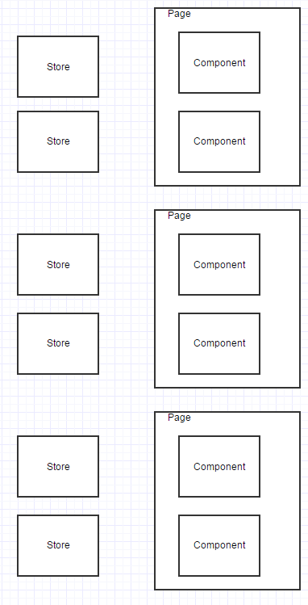

jrhicks.github.io
jrhicks.github.io
Dynamic LokiJS Views And Flux Stores
Sat Mar 21 2015 16:10
Sat Mar 21 2015 16:10
There are some entertaining similarities between a LokiJS Dynamic View and a Flux Store. In this post I introduce LokiJS Dynamic Views and demonstrate how you could use a Flux Store to implement the same functionality.
I also show how to use Flux Stores to go beyond LokiJS and implement some capabilities LokiJS doesn't yet (but will soon) provide. I end with some Flux-Frustrations that I think databases are uniquely capable of solving.
LokiJS has a feature called dynamic views that can build themselves from a collection and then very efficiently maintain themselves from updates. As described on LokiJS:
The DynamicView class allows for 'live', optionally persistent views. It supports multiple 'find' and 'where' filters and a single sort criteria. Changes to documents within the collection are automatically evaluated for addition or removal from the view ...
Here is a bookView dynamic store:
var bookView = db.books.addDynamicView("OldBooks");
bookView.applyFind({'yearPublished':{ '$lt' : 1950 }});
// Its worth noting that bookView is an event emitter.
bookView.on('rebuild', callback);
Could we implement this with a Flux Store? Yes!
import alt from '../alt';
import db from '../lokidb';
import BookCollectionActions from '../Stores/BookCollectionActions';
class OldBookStore {
constructor() {
this.bindActions(BookCollectionActions);
this.data = [];
}
rebuild(records) {
this.data = db.books.find( (r) => r.yearPublished <1950 );
}
onCreate(record) {
if (record.yearPublished < 1950) {
this.data.append(record);
}
}
onUpdate({oldRecord, newRecord}) {
if (oldRecord.yearPublished >= 1950 && newRecord.yearPublished <= 1950) {
this.data.append(record);
return;
}
if (oldRecord.yearPublished >= 1950 && newRecord.yearPublished >= 1950) {
return;
}
if (oldRecord.yearPublished < 1950 && newReocrd.yearPublished < 1950) {
return;
}
if (oldRecord.yearPublished < 1950 && newReocrd.yearPublished >= 1950) {
this.data = this.data.find( (r) r.id != newRecord.id );
return
}
}
onDelete({oldRecord}) {
if (oldRecord.yearPublished < 1950) {
this.data = this.data.find( (r) r.id != newRecord.id );
}
}
}
module.exports = alt.createStore(OldBookStore);
Certainly not identical, but I hope you see the analogy I'm trying to make.

In issue 106 applyMap function was proposed for dynamic views. It would allow things like:
var bookView = books.addDynamicView('bookView');
bookView.applyMap( (b) => objectAssign(b, {author: authorsCollection.findOne({id: b.author_id})}) );
This doesn't exist in LokiJS, but we could make it in a FluxStore
import alt from '../alt';
import db from '../lokidb';
import CollectionActions from '../Stores/CollectionActions';
class BookJoinStore {
constructor() {
this.bindActions(CollectionActions);
this.data = [];
}
reBuild() {
this.data = db.books.data.map( (b) => {book: b, author: db.authors.findOne({id: b.authorid}) })
}
onCreate({collectionName, record}) {
if (collectionName =='book') {
data.append({book: record, author: db.authors.findOne({id: record.authorId})})
}
if (collectionName == 'author') {
// It would be nice to do something efficient
// Until then
reBuild();
}
}
onUpdate({collectionName, oldRecord, newRecord}) {
if (collectionName =='book') {
// It would be nice to do something efficient
// Until then
reBuild();
}
if (collectionName == 'author') {
// It would be nice to do something efficient
// Until then
reBuild();
}
}
onDelete({collectionName, oldRecord}) {
if (collectionName =='book') {
// It would be nice to do something efficient
// Until then
reBuild(); }
if (collectionName == 'author') {
// It would be nice to do something efficient
// Until then
reBuild()
}
}
}
module.exports = alt.createStore(BookJoinStore);
Lets say I have 3 pages with 2 components each that all show, filter, and convert books in different ways.

Do I have a store for each component?
If I have a generic store that I can flush and reconfigure, how do I handle 2 components on the same page?
If I create a store for each component, how can I minimize un-needed updates to stores not in use by views?
Why can't I have less coupling?
I love stores! I just don't want to have to author a class for every store that is tightly coupled to the component it serves!
What if we could create the Store from within the component? And we could do it in a concise, declarative fashion that other people were figuring out how to keep performant!
What would that look like? I propose you could create and start listening to the store on the component mounting, and discard the store on unmount.
componentWillMount() {
this.bookView = db.books.addDynamicView("OldBooks");
this.bookView.applyFind({'yearPublished':{ '$lt' : 1950 }});
this.bookView.applySimpleSort({'yearPublished'});
this.bookView.on('rebuild', this.onChange);
}
componentWillUnMount() {
db.books.removeDynamicView("OldBooks");
}
onChange() {
this.setState(this.bookView.data);
}
Have you ever wondered what to call an action? For example, lets say a user double-clicks on book. Have you ever been tempted to name an action after the user interaction? Like "BookActions.doubleClicked(book)"? Something about naming the action after the user interaction instead of the domain change feels dirty and wrong. If what you really want to happen when the user double clicks the book is for it be added to your favorites list, then maybe the action should be called BookActions.addToFavorites(book).
We can go a step further. What if the only actions where create, update, and delete? This type of design constraint was the subject of DHH's 2006 keynote. In it he made a controversial but persuasive argument that if you've modeled your domain correctly that everything is CRUD.
So in the above example the DHH way would be to:
FavoritesActions.create({user: current_user.id, book: book})
While this is quite an opinionated stance. It certainly looks good for ditching ActionCreators and just using our collections.
db.favorites.insert({user: current_user.id, book: book});
I'm certainly not suggesting this as an unbreakable rule. You shouldn't have to make an update in order to show a drop-down menu or transition pages. For all non-crud operations, just use React-Router.